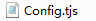
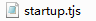
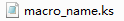
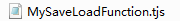

游戏工程
如上一篇教程所说，project文件夹下的每个子文件夹，都是一个游戏工程。
当点开一个游戏文件夹时，最外层的结构是这样的。
- ——放置游戏素材、脚本等的资料文件夹
- ——游戏启动必需的DLL文件存放处，一般不用去动它
- ——游戏测试必需的EXE，NVL会调用这个EXE。如果需要给游戏程序改名，请复制一个exe再这么做，否则会导致无法正常测试
这也是一个标准的吉里吉里/KAG游戏的结构。
当点下krkr.exe时，就会自动查找Data文件夹，或者名为Data.xp3的打包文件，如果存在，就尝试执行。
Data文件夹
继续打开Data文件夹，会发现里面有更多内容。
看起来很复杂，但实际上有一部分文件夹是空的，所以不用太紧张。
空文件夹的主要的作用是提示，建议你将不同用途的素材放到对应的文件夹下，以方便管理。
下面对所有的文件和文件夹的作用进行说明。
- ——存放背景图片素材
- ——存放背景音乐素材
- ——存放头像图片素材
- ——存放人物半身像（立绘、角色图）图片素材
- ——存放其他无法归类的图像类素材，NVL里主要用作存放粒子图片、默认模板素材等，即使用不到也请不要删除它们
- ——存放NVL界面配置文件和自制宏文件
- ——存放NVL地图、养成面板配置文件
- ——存放NVL系统文件、TJS插件等
- ——存放其他无法归类的素材，NVL里主要用作存放界面相关素材
- ——存放切换效果规则图片素材，具体请查看教程“层、页、画面切换”
- ——存放游戏剧情脚本文件
- ——存放音效素材
- ——存放吉里吉里/KAG系统文件
- ——存放视频素材
- ——存放语音素材
- ——吉里吉里/KAG游戏系统设置文件，可使用工具
 编辑
编辑 - ——吉里吉里启动时会执行的第一个tjs文件，通过它开始读入KAG系统
接下来重点介绍的是THE NVL Maker独有的内容。
对于吉里吉里/KAG模板里本身就存在的系统文件，如system文件夹下的内容，请自行查看吉里吉里/KAG官方说明文档或其他教程。
macro文件夹
macro文件夹是存放NVL界面配置文件和自制宏的地方。
各种.tjs为扩展名的界面配置文件，推荐通过界面编辑器来修改。
至于自制宏，则包括由姓名编辑器自动生成的姓名宏，以及可以自由添加修改的空白宏文件。
这些文件具体的用途如下。
- ——游戏CG图名称记录，每行一个文件，用于CG界面显示
- ——根据姓名编辑器的列表自动生成的姓名宏
- ——可以自由添加内容的空白宏文件
- ——姓名编辑器内保存的姓名和颜色列表
- ——对应“工程设定”的配置文件
- ——系统自动改写的跳转文件，在测试时通过它跳转到标题或具体脚本进行测试
- ——对应“界面设定-CG模式-CG界面编辑”的配置文件
- ——对应“界面设定-主界面样式-对话画面”的配置文件
- ——对应“界面设定-系统样式-历史记录”的配置文件
- ——对应“界面设定-存取样式-读取系统样式”的配置文件
- ——对应“界面设定-系统样式-主选单”的配置文件
- ——对应“界面设定-系统样式-系统设定”的配置文件
- ——对应“界面设定-存取样式-存储系统样式”的配置文件
- ——对应“界面设定-存取样式-版面设定”的配置文件
- ——对应“界面设定-系统样式-默认标题画面”的配置文件
map文件夹
map文件夹是存放nvl自定的地图和养成面板设定文件的地方。
两种设定文件的扩展名分别为.map和.edu。
但是本质上都是tjs格式的字典记录，因此也可以直接使用文本编辑器打开查看。
nvl文件夹
nvl文件夹是存放THE NVL Maker的系统框架和各种TJS插件的地方。
在早期版本里，nvl文件夹里的内容都放在macro内，后来为了区别系统代码和界面配置文件，新增了这个文件夹。
这样的好处就是，THE NVL Maker每次更新版本时，只需要更新nvl文件夹，而不用担心无意中覆盖了已经编辑好的界面配置文件。
另外，原来放在system文件夹内的TJS插件，也转移到了这里。
这样保证了system文件夹内的文件都是吉里吉里/KAGEX的标准配置。假如遇到KAG系统需要更新的情况（虽然几乎是不可能的），也不会和其他部分互相干扰。
- ——TJS插件：逐渐动画播放
- ——系统文件：CG模式
- ——TJS插件：萤火虫效果
- ——TJS插件：雾气效果
- ——函数文件：NVL系统相关的函数，全屏窗口快捷键、隐藏对话框后左键点击恢复效果、在选项按钮上描绘文字，根据姓名配置表返回对应颜色等
 ——系统文件：读取画面
——系统文件：读取画面- ——宏文件：加载DLL插件，层数量和顺序设定，加载界面配置文件，加载其他宏文件，加载TJS插件
- ——宏文件：CG模式
- ——宏文件：养成面板
- ——宏文件：地图画面
- ——宏文件：剧情演出相关宏（脚本编辑器内使用）
- ——宏文件：保存、读取画面
- ——宏文件：对话画面、系统设定画面、标题画面
- ——系统文件：主选单
- ——TJS插件：枫叶效果
- ——TJS插件：支持图片背景、按钮等的历史记录画面
- ——函数文件：存储、读取、退出询问等系统函数的重写，通过改写这个文件来代替修改system文件夹的内容
- ——TJS插件：支持图片背景、按钮等的“是-否”询问窗口（没有调用，仅作备份）
- ——TJS插件：旧电影效果
- ——系统文件：系统设定画面
- ——TJS插件：图片循环滚动效果
- ——函数文件：为ptext指令增加多行输出功能（没有调用，仅作备份）
- ——TJS插件：下雨效果
- ——系统文件：右键隐藏对话框，再右键显示对话框的功能
 ——TJS插件：樱花效果
——TJS插件：樱花效果- ——系统文件：保存画面
- ——TJS插件：下雪效果
- ——TJS插件：工作人员表
- ——TJS插件：限时选项计时槽
基本上，系统界面都会由两个部分组成：系统脚本文件和宏文件。
系统脚本文件负责界面的“逻辑”部分。例如显示按钮、等待用户操作、返回。
而宏文件内的函数则定义了具体的功能，并准备了简单的宏指令让系统脚本使用。
这样的写法让系统脚本显得很短而且容易看懂并修改。（相对来说宏文件就不那么容易了……）
scenario文件夹
scenario文件夹是存放剧情脚本的地方。
在标准的吉里吉里/KAG工程里，在KAG系统加载完毕后，第一个读取的剧情脚本文件就是first.ks。
这点对THE NVL Maker来说也是一样的。first.ks里，会先将nvl的系统框架加载进来，之后才开始游戏，进入标题画面或具体的剧情脚本。
- ——版本情报对话框，点下游戏窗口上方的“帮助-关于”之后就会打开，KAG3DOC里有独立教程，此处不赘言
- ——初始化设定，加载nvl框架，游戏开始
- ——预留的自定系统界面，从对话画面的系统按钮或主选单上点下“自定按钮”之后，会跳转到这里，可以在这里添加内容，自制游戏系统
- ——加载自定义文件夹和功能扩展脚本
- ——“序章”，从默认标题画面点下“开始游戏”之后就会进入这里，在NVL的剧情脚本列表里会被飘红显示。在不改变文件名的情况下，内容可以随意删除、修改或添加
- ——系统文件：默认标题画面，原本应该放在nvl文件夹下，但考虑到标题画面通常是自定义需求最高的，丢在这里方便大家修改
- ——预留的自定系统界面，从标题画面点下“自定按钮”之后，会跳转到这里，可以在这里添加内容，自制游戏系统